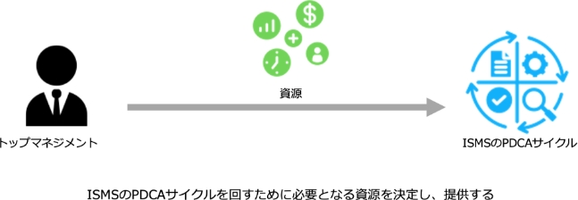
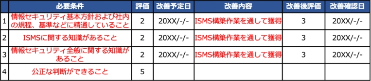
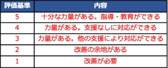
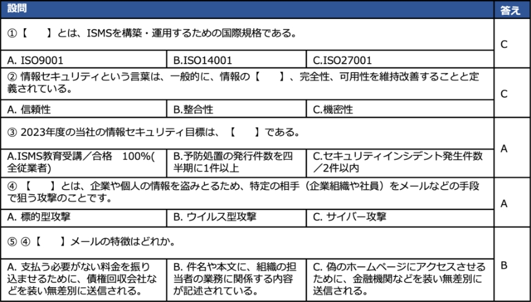
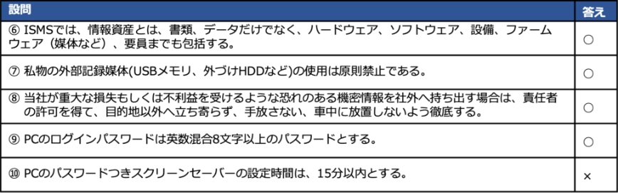
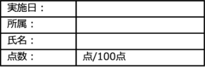
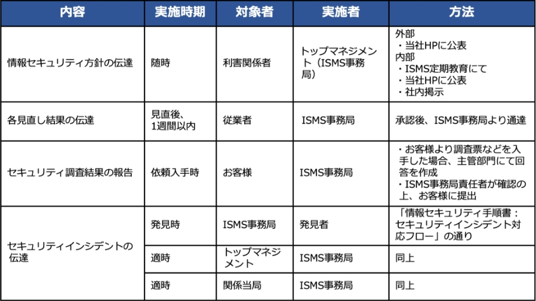

13-2-5. ISMS：7. 支援
「7. 支援」は、PDCAサイクルの「Plan（計画）」に位置しており、ISMSの運用をサポートするための要求事項が規定されています。
7. 支援
作成ドキュメント（例）
7.1 資源
ISMSに必要な資源（人、物、金、情報）を決定し、提供します。
ー
7.2 力量
ISMS適用範囲の要員に求められる力量（知識、技能など）を定義し、要員が力量を備えているか評価を行います。力量評価の結果、力量が不足している場合は、力量を身につけるための教育を計画し、実施します。教育の実施後、力量を取得・維持できたか確認テストを行います。最後に、実施した教育内容を記録として保持します。
- 力量確認表
- 教育計画書
- 理解度確認テスト
- 教育実施記録
7.3 認識
ISMS適用範囲のすべての要員に、以下の内容を認識させる必要があります。
- 情報セキュリティ方針
- 情報セキュリティパフォーマンスの向上によるメリットや、自身の業務とISMSの関係、実施すべきセキュリティ対策
- ISMSによって割り当てられた責任を果たさなかった際の影響
ー
7.4 コミュニケーション
ISMSを運用するにあたり、必要な意思疎通ができるプロセスを確立する必要があります。
ー
7.5 文書化した情報
ISMSに必要な文書化した情報の作成、更新、管理についての要求事項が記載されています。
ー
7.1 資源
ISMSのPDCAサイクルを回すために必要な資源を決定し、利用できるようにする必要があります。必要な資源を決定し提供することは、トップマネジメントが行う必要があります。（リーダーシップ及びコミットメントの箇所で要求されています。）
資源の具体例を以下に示します。例を参考に、ISMSのPDCAサイクルを回すために自社で必要となる資源を決定し、利用可能にします。
資源
具体例
人
- ISMSを構築・運用するために必要となる要員
- ISMSの推進体制の確立
- 必要に応じた外部の専門家 など
物
- 情報を処理するための機器（サーバ、ネットワーク機器など）
- コミュニケーション手段（パソコン、スマホなど）
- 活動に必要な施設 など
金
- 人、物の資源を確保するための予算
- 要員の教育費用
- ISMSの維持費 など
情報
- 文書化した情報
- ISMSのPDCAサイクルを回すために有用な情報
- 情報セキュリティに関する最新情報 など
7.2 力量
作成するドキュメント
- 力量確認表
- 教育計画書
- 理解度確認テスト
- 教育実施記録
ISMS適用範囲の要員に必要な力量（知識、技能など）を明確にし、実際に要員が力量を備えているか評価を行います。力量が不足している場合、力量を身につけるための教育を計画し、実施する必要があります。教育の結果、力量が取得できたかを評価します。
力量確認表の作成方法（例）
要員の力量を評価し、確認するための力量確認表を作成する方法について説明します。
以下は、部門管理者の力量評価の例です。以下の手順で赤文字の箇所を自社の状況に合わせたものに修正することで、自社に適した力量確認表を作成できます。
- 1.各要員ごとに、「組織の役割、責任及び権限」で割り当てられた役割や責任を果たすために必要となる力量を、「必要条件」として定義します。
- 2.責任者として任命できるかどうか判断するための任命基準を定義します。
- 3.定義された力量をどれほど備えているか、評価基準を決めて評価を行います。
- 4.評価の結果、力量が不足している場合は教育・訓練を実施します。
- 5.教育・訓練の実施後、どれほど改善できたか評価を行い、任命基準をもとに責任者として任命できるか判断します。
A：項目のすべてが"3"以上。
B：項目の"2"以下について改善の予定がある。
C：項目の"2"以下について改善の予定がない。
※改善確認までは暫定的に任命し、改善確認後に正式任命とする
 教育計画書の作成方法（例）
力量評価の結果をもとに、必要な力量を身につけるための教育を計画します。以下の例をもとに、教育計画書の作成方法を説明します。
教育目的
ISO27001認証取得のため
教育対象者
全従業者
教育方法
方法：eラーニングによる自己学習、確認テスト。
委員会より、受講対象者に受講案内のメールを送付。
受講者は、案内にあるURLからeラーニングのシステムにアクセスし、受講(テキストのダウンロード)／確認テストを行う。
教育内容
ISMSに対する意識向上
- 当社の方針や手順について（情報セキュリティ基本方針など）
- ISMSの有効性に対する自らの貢献
- ISMS要求に適合しないことの意味
- 当社のルールの遵守
実施期間
20XX年‐月‐日(‐)～20XX年‐月‐日(‐)
教育の有効性評価
情報セキュリティハンドブックを用いて教育を実施。
教育終了後、アンケート／確認テストを実施し記録に残す。
確認テストは、合格点は100点以上とする。
確認テストは、合格点に達するまで繰り返す。
教育計画書には、以下の内容を含めます。
-
教育目的
教育を実施する目的を記載します。 -
教育対象者
教育を受ける対象者を記載します。 -
教育方法
教育・訓練方法は、集合研修や、職場訓練（OJT）、資格試験の受験、eラーニングなどさまざまあります。必要な力量を身につけるために適切と考えられる方法を選択します。 -
教育内容
どのような教育を実施するのか、教育内容を記載します。 -
実施期間
教育を実施する期間を記載します。 -
教育の有効性評価
必要な力量を身につけることができたか評価する方法を記載します。
明確に評価が可能であれば、どのような方法でも問題ないです。たとえば、テストやアンケートの実施が挙げられます。次のページでテストの作成方法について説明します。
理解度確認テストの作成方法（例）
教育の実施後、必要な力量を身につけることができたか評価するため、教育内容に関するテストを行うことが有効です。テストは、理解度が点数という数値で可視化されるため、評価がしやすく、多くの企業が実施しています。テストの作成例は以下の通りです。
次の【 】に入る言葉として最も適したものを選びなさい（各10点）
次の文章のうち正しいものには○、間違っているものには×をつけなさい（各10点）
 - テストは、選択問題や正誤形式にすることで採点がしやすくなります。
- 教育内容に合った問題を考え、作成します。たとえば、今回の教育内容に「当社のルールの遵守」が含まれているため、⑥～⑩のような設問を作成します。
教育実施記録の作成方法（例）
教育を実施した際、実施記録を文書化する必要があります。以下の例をもとに、教育実施記録の作成方法を説明します。
教育の名称
ISMS教育（基本方針、目標、ルール）
実施期間
20XX年‐月‐日(‐)～20XX年‐月‐日(‐)
実施方法
eラーニング
使用テキスト
情報セキュリティハンドブック
教育の概要
情報セキュリティハンドブックなどによるISMSに対する意識向上
- 当社の方針や手順について（情報セキュリティ基本方針など）
- ISMSの有効性に対する自らの貢献
- ISMS要求に適合しないことの意味
- 当社のルールの遵守
学習後にテスト実施
受講対象者・部門
上記教育実施期間において在籍する全従業者
参加者
別紙：「教育受講者一覧」を参照
備考
特になし
教育実施記録には、以下のような内容を含めます。
-
教育の名称
どのような教育を実施したのか、教育テーマを記載します。 -
実施期間
教育を実施する期間を記載します。 -
教育方法
教育・訓練方法は、集合研修や、職場訓練（OJT）、資格試験の受験、eラーニングなどさまざまあります。その中で、実際に実施した方法を記載します。 -
教育の概要
実施した教育の概要や、教育を実施した目的を記載します。 -
受講対象者・部門
教育を受講する対象者を記載します。 -
参加者
教育を実際に受講した者を記載します。以下の例のように、「教育の受講者一覧」を別紙で作成し、実施記録と分けて記載すると分かりやすくなります。
No
所属
氏名
受講日
1
営業
○○○○
20XX/-/-
2
管理
○○○○
20XX/-/-
7.3 認識
ISMS適用範囲で働くすべての社員、従業員が情報セキュリティ方針を理解し、それを実現することの重要性を認識する必要があります。逆に、セキュリティ対策を実施せず、セキュリティ方針を実現できなかった場合、どのようなことが起きるのかについて理解する必要もあります。
具体的には、以下の内容について教育を行い、ISMSの重要性を十分理解させる必要があります。
- 情報セキュリティ方針
- 情報セキュリティパフォーマンスの向上によるメリットや、自身の業務とISMSの関係、実施すべきセキュリティ対策の具体的な内容
- ISMSによって割り当てられた責任を果たさなかった場合の組織に与える影響
これらの内容について認識を持たせるために、教育や訓練を実施します。
具体的な教育・訓練の実施手順は、「力量」や「コミュニケーション」で説明します。
力量
上記の内容について、各要員が認識しているか評価を行い、認識が不十分の場合は教育を実施し、認識させます。
コミュニケーション
情報提供・共有によって、上記の内容の認識を深めるようにします。
7.4 コミュニケーション
ISMSのPDCAサイクルを回すためには、内部および外部とのコミュニケーションを円滑に行う必要があります。そのため、組織内および組織外の関係者とコミュニケーションをとる手順などを定め、必要なときに円滑なコミュニケーションが行える体制を整えておくことが重要です。コミュニケーションの手順などには、以下の内容が含まれます。
- コミュニケーションの内容
- コミュニケーションの実施時期
- コミュニケーションの対象者
- コミュニケーションの方法
ISMSに関連するコミュニケーションをとる手順を確立した例を、以下に示します。例を参考に、自社のISMSのPDCAサイクルを回す上で必要なコミュニケーションをとる手順を確立します。
- 内容：コミュニケーションで伝える情報
- 実施時期：伝えるタイミング
- 対象者：誰に伝えるのか、情報を伝える対象者
- 実施者：誰が伝えるのか、情報を対象者に伝える者
- 方法：情報を伝える手段
7.5 文書化した情報
ISMSに必要な文書化した情報の作成、更新、管理方法を決めます。
一般
以下の情報をISMSに含める必要があります。
- ISO/IEC 27001が要求する文書化した情報
- ISMSの有効性のために必要であると組織が判断した文書化した情報
以下は、ISO/IEC 27001が要求する文書化した情報の一覧です。
文書化した情報
作成する項番
ISMSの適用範囲
「4. 組織の状況」で作成
情報セキュリティ方針
「5. リーダーシップ」で作成
リスクアセスメントプロセスに関わる文書化された情報
リスク対応プロセスに関わる文書化された情報
情報セキュリティ目的に関わる文書化された情報
「6. 計画」で作成
力量の証拠
組織が決めた文書化された情報
「7. 支援」で作成
ISMSのプロセス実施に関わる文書化された情報
リスクアセスメントの結果
リスク対応の結果
「8. 運用」で作成
監視・測定の結果
監査プログラムの実施、結果に関わる文書化された情報
マネジメントレビューの結果
「9. パフォーマンス評価」で作成
不適合の内容と処置、処置の結果
「10. 改善」で作成
作成および更新
ISMSに必要な文書化した情報を作成・更新する際に、以下の事項を確実にする必要があります。
1. 適切な識別と記述
文書化した情報を識別できるよう、以下の例のように採番方法を決めたり、各文書には適切なタイトル、作成者、承認者、日付などを記載したりします。
文書の種類
採番方法
基本文書
A-□□（01から採番を始める）
ISMSマニュアル
B-01
手順書
C-01
記録類
D-01
外部文書
採番せずに文書名、作成社名などの名称にて識別する
2. 適切な形式
文書化する情報を記載する媒体として、紙や電子データなどを指定し、適切な形式（文字、図表など）を用いて読みやすく、簡潔に記載します。
3. 適切なレビューと承認
文書化した情報は、適切な承認とレビューを行い策定します。
文書化した情報の管理
ISMSの文書化した情報を管理する必要があります。
（管理方法の例）
文書化した情報は、ISMS事務局責任者が、最新版を紙の媒体としてファイリングし、キャビネットにて保管し、適用範囲内の対象者が必要なときに、必要なところで利用可能にする